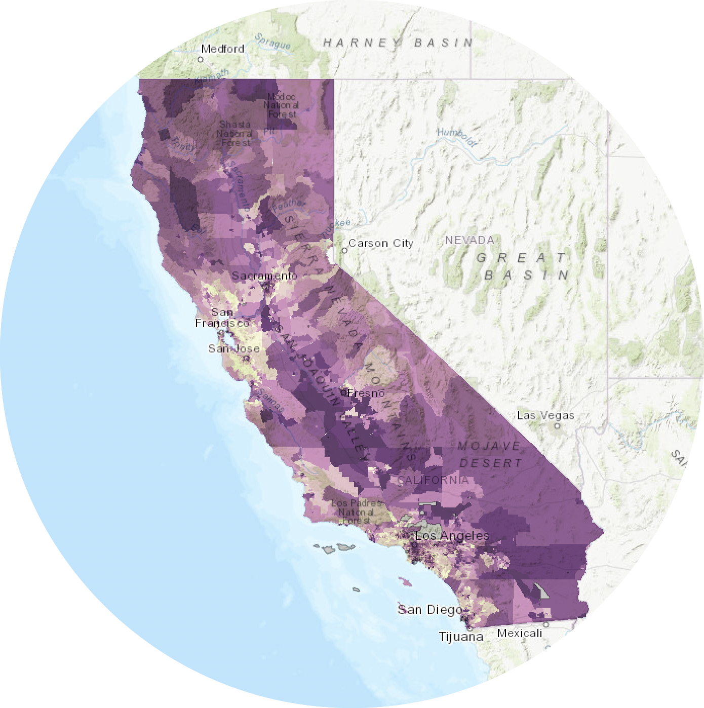
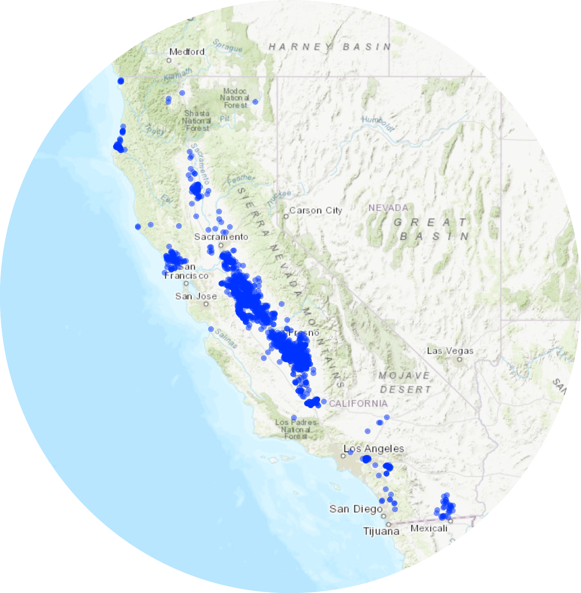
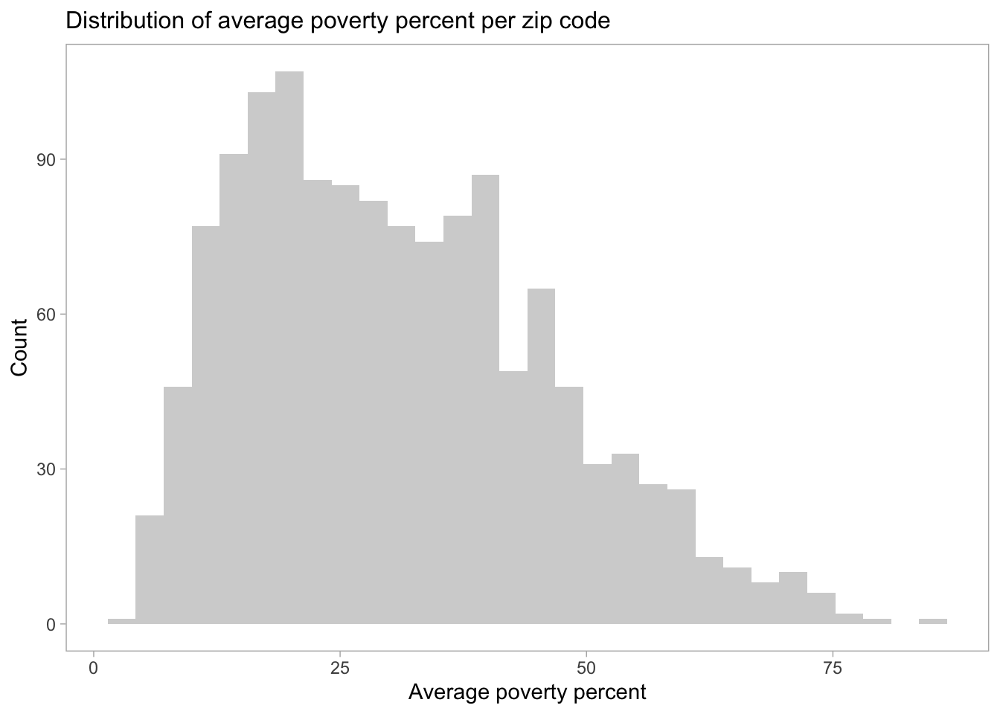
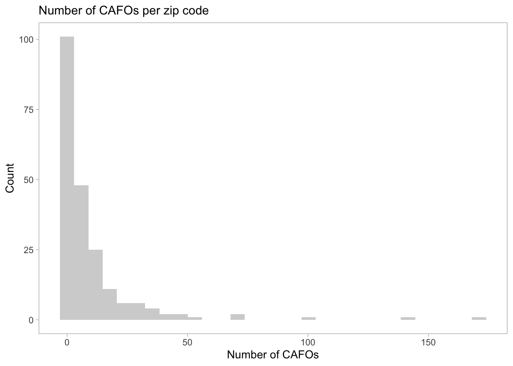

Predicting CAFO presence in California based on poverty rates
MEDS
R
Statistical Analysis
Binary Logistic Regression
Analyzing the relationship between poverty rates and CAFO presence.
Author
Affiliation
Alex Reed
MEDS
Published
December 3, 2022
Question
Do poverty rates (as measured by the percent of the population living below two times the federal poverty level) impact the probability of Concentrated Animal Feeding Operation (CAFO) presence in California?
Introduction
The animal agriculture industry comprises hundreds of thousands of individual animal feeding operations (AFOs). These are facilities that raise animals in confinement. CAFOs are a subset of AFOs distinguished by their large size, number of animals, or their designation as significant polluters of surface waters.1 Animal feeding facilities in this analysis will be described as CAFOs.
CAFOs pollute water sources, contaminate air, generate and spread dangerous pathogens, and exacerbate climate change. As a result, CAFOs cause serious, well-documented harm to humans, wildlife, and the environment. The burdens of CAFO pollution fall disproportionately on communities of color, low-income communities, and under-resourced rural communities.2
Although CAFOs are found within all regions of California, high densities occur in the Central Valley. The highest number of CAFO facilities were ranked in the 91-100 and 81-90 percentiles according to the CalEnviroScreen (one of my data sources), especially in relation to poor air and water quality metrics.3 There is evidence linking poverty in agricultural regions due to lack of economic diversity, low-paying agricultural jobs, and unhealthy working environments.
My analysis will investigate if poverty rates are a predictor of CAFO presence in California.
Data
Data Source
1. CalEnviroScreen 4.0
I used CalEnviroScreen 4.0 data developed by the California Office of Environmental Health Hazard Assessment (OEHHA). CalEnviroScreen 4.0 was released in October 2021. CalEnviroScreen 4.0 uses environmental, health, and socioeconomic information to produce scores for every census tract in California. The data set includes columns of environmental pollution and population indicators by census tract. This data comes in publicly available .xlsx, .shp, and .gdb formats. I downloaded the .xlsx format.
Poverty Indicator Data
For this analysis, I focused on the poverty indicator. Information on poverty is collected annually in the US Census Bureau’s American Community Survey (ACS). The poverty indicator is defined as the percent of the population living below two times the federal poverty level. The poverty percent per census tract was calculated by individuals living below 200% the poverty level per census tract divided by total individuals living below 200% of the poverty level. The poverty percent was calculated using a 5-year estimate to provide more reliable estimates for geographic areas with small population sizes. The most recent results available at the census tract scale are the 5-year estimates for 2015-2019. Standard error was used to evaluate the reliability of the calculated poverty rate estimates. Census tracts with unreliable estimates received no score for poverty (NA).4

2. CIWQS Database
CAFO Data
The Clean Water Act (CWA) requires the U.S. Environmental Protection Agency (USEPA) to regulate CAFOs.5 CAFOs are regulated under the National Pollutant Discharge Elimination System (NPDES) permitting program. The California Integrated Water Quality System (CIWQS) is a database used by the State and Regional Water Quality Control Boards to track information about places of environmental interest, manage NPDES permits and other orders, track inspections, and manage violations and enforcement activities.6 I was able to generate a Regulated Facility Report of active NPDES permits that fall under the Animal Feeding Facility type. These permits were exported to excel. The data set includes columns with the facility address, facility name, number of animals at the facility (CAFO population), number of violations, among other information. For this analysis, I utilized the facility addresses to determine how many CAFOs were located within each zip code.

show the code
library(leaflet)library(janitor)library(readxl)library(here)library(sf)#creating the figure in the column cafo_df2<-read_xlsx(here("/Users/alexreed/Documents/MEDS/Courses/EDS_222/final_project/EDS222_Final/data/Regulated_Facility_Report_Detail.xlsx")) |>clean_names()cafos_plot <- cafo_df2 |>st_as_sf(coords =c("longitude", "latitude"), crs =4326)cafos_plot |>leaflet() |>addProviderTiles(providers$Esri.WorldTopoMap, group ="World Imagery") |>addProviderTiles(providers$Stamen.TonerLite, group ="Toner Lite") |>addLayersControl(baseGroups =c("Esri.WorldTopoMap", "Toner Lite")) |>addCircles()
Data Download and Basic Visualizations
show the code
#load packageslibrary(tidyverse)library(readr)library(here)library(janitor)library(ggplot2)library(modelr)library(broom)library(readxl)library(sjPlot)#read in CalEnviro data and subset poverty datacal_enviro <-read_xlsx(here("/Users/alexreed/Documents/MEDS/Courses/EDS_222/final_project/EDS222_Final/data/calenviroscreen40resultsdatadictionary_F_2021.xlsx")) |>clean_names()cal_enviro$zip <-as.character(cal_enviro$zip)#poverty subsetcal_enviro_poverty <- cal_enviro |>select("california_county", "zip", "poverty") |>group_by(zip) |>summarise(avg_poverty =mean(poverty, na.rm = T)) |>drop_na(avg_poverty)cal_enviro_poverty$zip <-as.character(cal_enviro_poverty$zip)
show the code
#poverty histogrampoverty_hist <-ggplot(cal_enviro_poverty, aes(x = avg_poverty)) +geom_histogram(fill ="light gray") +labs(x ="Average poverty percent",y ="Count",title ="Distribution of average poverty percent per zip code") +theme_light() +theme(panel.grid =element_blank(),plot.title =element_text(size =12))poverty_hist

Fig 1. Average poverty rates in California were not normally distributed. The average mean percent of the population living below two times the federal property level per zip code is 30.86%.
show the code
#read in cafo data, clean, and select columns of interest #create new column that sums the number of CAFOs per zip codecafo_df<-read_xlsx(here("/Users/alexreed/Documents/MEDS/Courses/EDS_222/final_project/EDS222_Final/data/Regulated_Facility_Report_Detail.xlsx")) |>clean_names() |>separate(col = facility_address, c("address", "city", "CA_zipcode"), ", ") |>separate(col = CA_zipcode, c("CA", "zip"), " ") |>drop_na(zip) |>select("facility_name", "zip") |>mutate(count =1) |>group_by(zip) |>summarise(count =sum(count))
show the code
#CAFO histogramcafo_hist <-ggplot(cafo_df, aes(x = count)) +geom_histogram(fill ="light gray") +labs(x ="Number of CAFOs",y ="Count",title ="Distribution of CAFOs per zip code") +theme_light() +theme(panel.grid =element_blank(),plot.title =element_text(size =12))cafo_hist

Fig 2. The number of CAFOs in California were not normally distributed. The mean number of CAFOs per zip code was 9.7.
I then joined the data sets and created a binary variable. I created a column based on CAFO presence (cafo_presence). If there was a 0 in the count column the cafo_presence column received a not present variable and if there were one or more CAFOs it received a present variable. I created an additional column, cafo_presence_numeric for the numeric equivalence.
show the code
#join the poverty and CAFO data sets by zip code. Make a binary variable.joined_poverty <-left_join(cal_enviro_poverty, cafo_df, by ="zip") joined_poverty["count"][is.na(joined_poverty["count"])] <-0#NA = zip codes without CAFOs, converting to 0 instead of NAjoined_poverty <-mutate(joined_poverty, cafo_presence =ifelse(count==0, "not present", "present")) |>mutate(joined_poverty, cafo_presence_numeric =ifelse(cafo_presence=="not present", 0, 1))#creating two new rows: cafo_presence = 'present' or 'not present', and cafo_presence_numeric = 1 or 0
show the code
joined_plot <-ggplot(data = joined_poverty, aes(x = avg_poverty, y = cafo_presence, color = cafo_presence)) +geom_point(position=position_jitter(height=0.05, width=0), alpha =0.8) +labs(x ="Average poverty percent", y ="CAFO Presence")joined_plot +scale_color_manual(values =c("#aec3b0", "#124559"))
Fig 3. Visualizing a binary response
Data Limitations
I was unable to locate CAFO location data per census tract. Therefore, I averaged the poverty data per zip code and joined the two data sets by zip code. Multiple census tracts are within one zip code; thus, the averaging of the poverty rate per zip code could increase or decrease the poverty percent of an area.
There are 1,736 zip codes in California, but the poverty data only included 1,345 zip codes.
Out of 8,035 observations, 75 observations had no poverty data (NA). I removed the NAs.
The EPA admits that numerous CAFOs currently discharge water pollution without NPDES permits.7 Thus, there may be CAFOs unaccounted for in this analyses.
Methods
Hypothesis
The null hypothesis (H0): There is no relationship between poverty percent and CAFO presence in California.
The alternative hypothesis (HA): There is a relationship between poverty percent and CAFO presence in California.
Logistic Regression
There are limitations to a simple linear regression with binary outcomes; thus, I used a generalized linear model (GLM) to run a logistic regression, as this is useful for modeling a binary response variable.
I used the GLM to model the probability of a binary event (presence of CAFOs) for varying poverty rates in California.
When I compute the odd ratio, the odds of CAFO presence increase exponentially as poverty percent increase. The odds of CAFO presence increase more with higher poverty rates.
Conclusion
The results indicate that there is a statistically significant relationship between poverty percent and the presence of CAFOs in California. As the average poverty percent increases, the probability of CAFO presence increases. As previously mentioned, CAFOs are point sources of pollution. Therefore, my analysis provides evidence that CAFO pollution is disproportionately affecting people with high poverty rates in California, which raises environmental justice issues.
Future Research
This analysis was a simple univariate logistic regression. Future analyses could look at multiple variables, but instead of predicting CAFO presence, determine if CAFO presence or the number of CAFOs present in a region is a predictor of environmental pollution variables such as poor water or air quality. Other interesting objectives could be to spatially analyze the distribution of CAFOs and proximity to impaired body of waters or areas with air pollution. The end goal would be to provide evidence to inform policy for stricter CAFO regulations and protections for vulnerable communities.
Alford, Jennifer B. and Perez, Jocelyn, “Geospatial Applications for Identifying Concentrated Animal Feeding Operations (CAFOs) and Impaired Streams in California” (2019). Geography and Environmental Studies Faculty Publications.↩︎
NPDES Permit Writers’ Manual for CAFOs. (n.d.). 673. (https://www.epa.gov/sites/default/files/2015-10/documents/cafo_permitmanual_entire.pdf)↩︎
California Integrated Water Quality System Project (CIWQS) | California State Water Resources Control Board. (n.d.). Retrieved December 5, 2022, from https://www.waterboards.ca.gov/water_issues/programs/ciwqs/↩︎
NPDES Permit Writers’ Manual for CAFOs. (n.d.). 673. (https://www.epa.gov/sites/default/files/2015-10/documents/cafo_permitmanual_entire.pdf)↩︎
Citation
BibTeX citation:
@online{reed2022,
author = {Alex Reed},
title = {Predicting {CAFO} Presence in {California} Based on Poverty
Rates},
date = {2022-12-03},
url = {https://reedalexandria.github.io/2022-12-03-cafo-presence},
langid = {en}
}